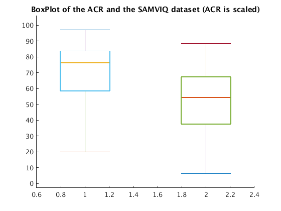
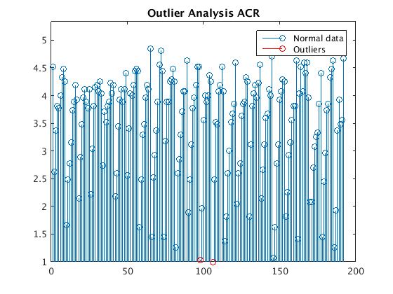
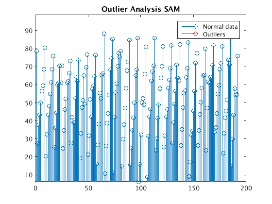
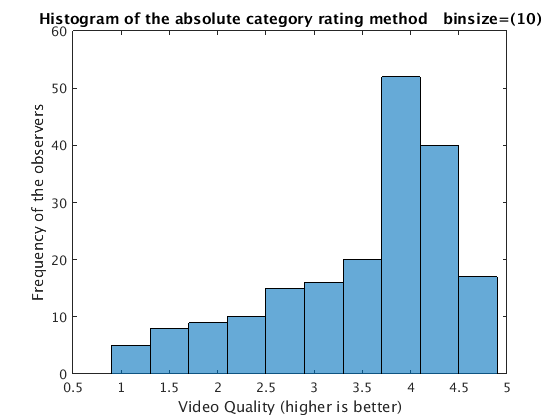
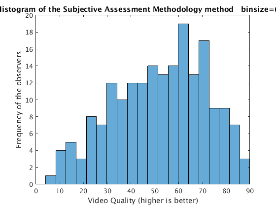

Contents
close all;
clear;
Load data_lab2.mat. ‘ACR’ and ‘SAMVIQ’ are the averaged subjective quality scores from 28 and 39 observers respectively.A total of 192 videos were rated.
(A)Compare the quality scores from ACR and SAMVIQ methodologies by creating box plots (do not use the boxplot command but instead create your own function). Which of the two exhibits higher variability around the median? Justify your answer (hint: think of the qualitative differences between the two methods, and also the fact that different number of observers were used for each method).
load('data_lab2.mat'); dataset=ACR; sorted=sort(dataset); len=size(sorted,1); Q1d1=sorted(floor(len*0.25)) Q2d1=sorted(floor(len*0.50)) Q3d1=sorted(floor(len*0.75)) myboxplot1=[min(dataset) Q1d1 Q2d1 Q3d1 max(dataset)]; dataset=SAMVIQ; sorted=sort(dataset); len=size(sorted,1); Q1d2=sorted(floor(len*0.25)) Q2d2=sorted(floor(len*0.50)) Q3d2=sorted(floor(len*0.75)) myboxplot2=[min(dataset) Q1d2 Q2d2 Q3d2 max(dataset)]; draw_data=[myboxplot1*20; myboxplot2]; draw_data=draw_data'; lineWidth=1; width=1; n = size(draw_data, 2); unit = (1-1/(1+n))/(1+9/(width+3)); figure; hold on; for i = 1:n v = draw_data(:,i); % draw the min line plot([i-unit, i+unit], [v(5), v(5)], 'LineWidth', lineWidth); % draw the max line plot([i-unit, i+unit], [v(1), v(1)], 'LineWidth', lineWidth); % draw middle line plot([i-unit, i+unit], [v(3), v(3)], 'LineWidth', lineWidth); % draw vertical line plot([i, i], [v(5), v(4)], 'LineWidth', lineWidth); plot([i, i], [v(2), v(1)], 'LineWidth', lineWidth); % draw box plot([i-unit, i+unit, i+unit, i-unit, i-unit], [v(2), v(2), v(4), v(4), v(2)], 'LineWidth', lineWidth); end; diff=max(max(draw_data))- min(min(draw_data)); ylim([min(min(draw_data))-(diff)/10 max(max(draw_data))+diff/10]); title('BoxPlot of the ACR and the SAMVIQ dataset (ACR is scaled)') figure;
Q1d1 =
2.9259
Q2d1 =
3.8148
Q3d1 =
4.1852
Q1d2 =
37.5294
Q2d2 =
54.3333
Q3d2 =
67.3333
 %Which of the two, ACR or SAMVIQ, leads to mathematical outliers % (assume points beyond Q3 + w*IQR or Q1 - w*IQR with w = 1.5, % as mathematical outliers)? Any reason(s)? IQR1=Q3d1-Q1d1 w=1.5; outliers_left1= (ACR<= Q1d1 -w*IQR1); outliers_right1=(ACR >= Q3d1 + w*IQR1); outliers1=(outliers_left1 | outliers_right1); outliers_data1=zeros(size(ACR)); for i=1:size(ACR,1) if(outliers1(i)==1) outliers_data1(i)=ACR(i); end end stem(ACR) hold on stem(outliers_data1,'ro') legend('Normal data','Outliers') diff=max(max(ACR)) -min(min(ACR)); ylim([min(min(ACR)) max(max(ACR))+diff/8 ]) title('Outlier Analysis ACR') figure IQR2=Q3d2-Q1d2 w=1.5; outliers_left2= (SAMVIQ<= Q1d2 -w*IQR2); outliers_right2=(SAMVIQ >= Q3d2 + w*IQR2); outliers2=(outliers_left2 | outliers_right2); outliers_data2=zeros(size(SAMVIQ)); for i=1:size(SAMVIQ,1) if(outliers2(i)==1) outliers_data2(i)=SAMVIQ(i); end end stem(SAMVIQ) hold on stem(outliers_data2,'ro') legend('Normal data','Outliers') diff=max(max(SAMVIQ)) -min(min(SAMVIQ)); ylim([min(min(SAMVIQ)) max(max(SAMVIQ))+diff/8 ]) title('Outlier Analysis SAM') figure
IQR1 =
1.2593
IQR2 =
29.8039
  bins=10; histogram(ACR,bins) xlabel('Video Quality (higher is better)') ylabel('Frequency of the observers') str=strcat('Histogram of the absolute category rating method binsize=(',int2str(bins),')'); title(str) figure bins=20; histogram(SAMVIQ,bins) xlabel('Video Quality (higher is better)') ylabel('Frequency of the observers') str=strcat('Histogram of the Subjective Assessment Methodology method binsize=(',int2str(bins),')'); title(str) 